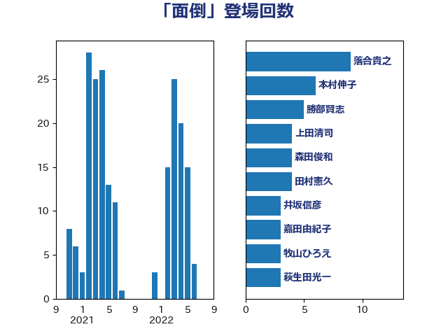

単語「面倒」

| 落合貴之 | 立憲民主党 | 9 回 |
| 本村伸子 | 日本共産党 | 6 回 |
| 勝部賢志 | 立憲民主党 | 5 回 |
| 上田清司 | 国民民主党 | 4 回 |
| 森田俊和 | 立憲民主党 | 4 回 |
| 田村憲久 | 自由民主党 | 4 回 |
| 井坂信彦 | 立憲民主党 | 3 回 |
| 嘉田由紀子 | 無所属 | 3 回 |
| 牧山ひろえ | 立憲民主党 | 3 回 |
| 萩生田光一 | 自由民主党 | 3 回 |
| 赤羽一嘉 | 公明党 | 3 回 |
| 野間健 | 立憲民主党 | 3 回 |
| 串田誠一 | 日本維新の会 | 2 回 |
| 吉良よし子 | 日本共産党 | 2 回 |
| 大島敦 | 立憲民主党 | 2 回 |
| 奥野総一郎 | 立憲民主党 | 2 回 |
| 寺田学 | 立憲民主党 | 2 回 |
| 山口壯 | 自由民主党 | 2 回 |
| 山崎誠 | 立憲民主党 | 2 回 |
| 岬麻紀 | 日本維新の会 | 2 回 |
| 柳ヶ瀬裕文 | 日本維新の会 | 2 回 |
| 櫻井周 | 立憲民主党 | 2 回 |
| 湯原俊二 | 立憲民主党 | 2 回 |
| 田嶋要 | 立憲民主党 | 2 回 |
| 竹内譲 | 公明党 | 2 回 |
| 芳賀道也 | 国民民主党 | 2 回 |
| 足立康史 | 日本維新の会 | 2 回 |
| 重徳和彦 | 立憲民主党 | 2 回 |
| 鈴木敦 | 国民民主党 | 2 回 |
| 長妻昭 | 立憲民主党 | 2 回 |
| 須藤元気 | 無所属 | 2 回 |
| 高橋千鶴子 | 日本共産党 | 2 回 |
| 伊波洋一 | 無所属 | 1 回 |
| 伊藤孝江 | 公明党 | 1 回 |
| 伊藤岳 | 日本共産党 | 1 回 |
| 古川元久 | 国民民主党 | 1 回 |
| 吉川元 | 立憲民主党 | 1 回 |
| 吉田はるみ | 立憲民主党 | 1 回 |
| 塩村あやか | 立憲民主党 | 1 回 |
| 大串博志 | 立憲民主党 | 1 回 |
| 小熊慎司 | 立憲民主党 | 1 回 |
| 小野泰輔 | 日本維新の会 | 1 回 |
| 山田美樹 | 自由民主党 | 1 回 |
| 岡田克也 | 立憲民主党 | 1 回 |
| 島村大 | 自由民主党 | 1 回 |
| 川田龍平 | 立憲民主党 | 1 回 |
| 平将明 | 自由民主党 | 1 回 |
| 平山佐知子 | 無所属 | 1 回 |
| 徳永久志 | 立憲民主党 | 1 回 |
| 末松信介 | 自由民主党 | 1 回 |
| 杉尾秀哉 | 立憲民主党 | 1 回 |
| 松川るい | 自由民主党 | 1 回 |
| 枝野幸男 | 立憲民主党 | 1 回 |
| 梅村みずほ | 日本維新の会 | 1 回 |
| 森山浩行 | 立憲民主党 | 1 回 |
| 武井俊輔 | 自由民主党 | 1 回 |
| 江田憲司 | 立憲民主党 | 1 回 |
| 河西宏一 | 公明党 | 1 回 |
| 河野太郎 | 自由民主党 | 1 回 |
| 泉田裕彦 | 自由民主党 | 1 回 |
| 浅野哲 | 国民民主党 | 1 回 |
| 海江田万里 | 立憲民主党 | 1 回 |
| 熊谷裕人 | 立憲民主党 | 1 回 |
| 片山大介 | 日本維新の会 | 1 回 |
| 白石洋一 | 立憲民主党 | 1 回 |
| 石井正弘 | 自由民主党 | 1 回 |
| 石井苗子 | 日本維新の会 | 1 回 |
| 石川博崇 | 公明党 | 1 回 |
| 石川香織 | 立憲民主党 | 1 回 |
| 神谷裕 | 立憲民主党 | 1 回 |
| 福山哲郎 | 立憲民主党 | 1 回 |
| 福島みずほ | 社会民主党 | 1 回 |
| 秋本真利 | 自由民主党 | 1 回 |
| 笠浩史 | 無所属 | 1 回 |
| 篠原孝 | 立憲民主党 | 1 回 |
| 緒方林太郎 | 無所属 | 1 回 |
| 自見はなこ | 自由民主党 | 1 回 |
| 荒井優 | 立憲民主党 | 1 回 |
| 菅義偉 | 自由民主党 | 1 回 |
| 藤田文武 | 日本維新の会 | 1 回 |
| 西村智奈美 | 立憲民主党 | 1 回 |
| 辻元清美 | 立憲民主党 | 1 回 |
| 近藤和也 | 立憲民主党 | 1 回 |
| 野田聖子 | 自由民主党 | 1 回 |
| 金子恵美 | 立憲民主党 | 1 回 |
| 鈴木義弘 | 国民民主党 | 1 回 |
| 階猛 | 立憲民主党 | 1 回 |
| 鬼木誠 | 立憲民主党 | 1 回 |